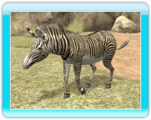
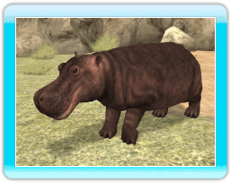
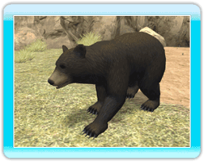

18 |
Gli animali |
 |

●Leone asiatico Questi carnivori delle foreste si muovono in piccoli branchi ma cacciano da soli.  ●Zebra di Grevy Questo erbivoro dal manto inconfondibile vive nella savana o nelle regioni semidesertiche. Trascorre la maggior parte delle ore di veglia mangiando.  ●Ippopotamo Questo grosso erbivoro vive alle latitudini inferiori dell'Africa e trascorre la maggior parte del tempo in acqua. Può restare immerso per circa 5 minuti. 
●Panda gigante Questo erbivoro vive nei boschetti di bambù e trascorre la maggior parte del giorno cibandosi delle loro foglie. 
●Elefante africano Questo grosso erbivoro vive nelle savane e nelle foreste. Si bagna spesso perché il caldo intenso gli secca la pelle. 
●Armadillo a 3 fasce Questo piccolo onnivoro vive nelle savane e nelle foreste. È lungo appena 20 centimetri e si arrotola su se stesso per proteggersi dai predatori.  ●Orso nero americano Questo onnivoro vive nelle foreste ed è molto abile nell'arrampicarsi sugli alberi. 
●Tapiro dalla gualdrappa Questi erbivori vivono in genere nelle foreste, vicino all'acqua, o nelle regioni umide e si spostano da soli o a coppie. |
 |
 |